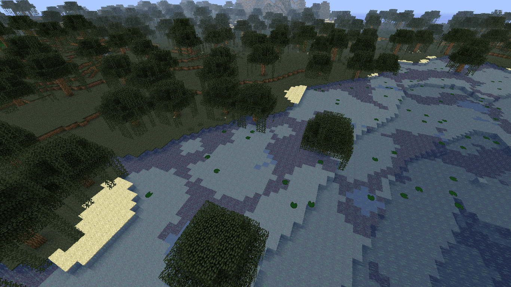

заснеженный пляж

не очень редкий биом игрок в нем не часто спанится
грибной берег
Грибной берег — умеренный биом, представляющий собой океанический остров, заросший грибами. В Minecraft есть два вида грибных полей — грибной остров и его побережье.
равнины края

Если вы не знаете, что такое биом: это природная зона, которая используется игрой, чтобы определить, какая поверхность будет у земли (песок? трава?), будет идти дождь или снег, какие деревья там растут, и иногда — каким животным можно там спауниться.
бамбуковый лес
Описание. Бамбуковый лес-это новый биом в Minecraft: Ultimate Edition. Это не редкость, но и не обычное явление. Его можно определить с расстояния в сотни кварталов по большим бамбуковым деревьям, торчащим из земли.
подзолистая тайга
Тайга́ — биом, характеризующийся преобладанием хвойных лесов, образованных в основном бореальными видами ели, пихты, лиственницы и сосны. Словом «тайга» обозначают также одну из географических подзон северного умеренного пояса. В неарктическом сегменте (Северная Америка) тайгу называют «северным лесом» или «снежным лесом».
Тайга
Тундра с немалым числом хвойных деревьев и темновато-голубой травкой. Весьма Нередко тайга генерируется бугристой. В последствии обновления 1.7.2 существует 2 вида тайги: тайга без снега и наиболее редкостная холодная тайга, в которой выпадает cнегопад и леденеет вода.
Болото
Равнинный биом с большим количеством маленьких озер. Деревья могут произрастать в озерах, под ними растет огромное число грибов (в основном кофейные), а на листве вырастают лианы. Кроме того допускается отыскать тростник. Вода сероватого тона, на ее поверхности плавают кувшинки . Перед водою может находиться немалое число глины . Также генерируется хижина Ведьмы .
Ледяная Тундра
Заснеженная пустая область практически без деревьев, поверхность речек и озёр в данном биоме состоит изо льда.
ледяные шипы

Ледяные шипы-это высокие шпили, сделанные из уплотненного льда, которые можно найти только в варианте Ледяных шипов в биомах снежной тундры. Существует два типа ледяных шипов: один короткий и толстый, а другой высокий и тонкий.
пустыня
В пустыне почти нет растений — есть только кактусы и сухие кусты. В этом биоме в основном обитают только кролики; однако, если игрок нашёл деревню, то может встретить там жителей, кошек, коров, овец и свиней.